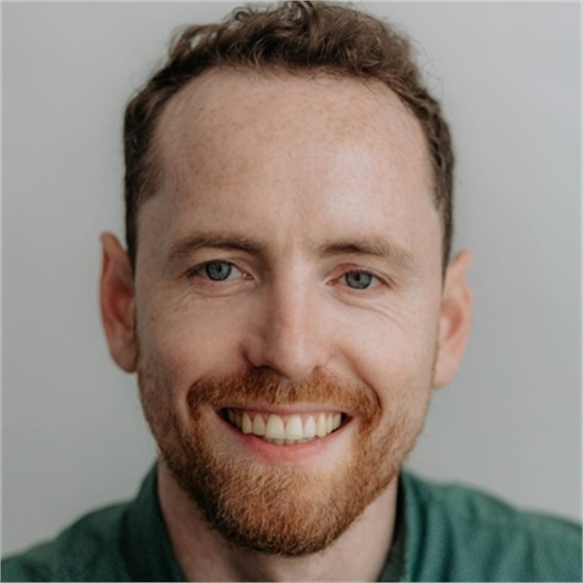

San Cristóbal de la Laguna, Spain
+34 639981732
john@jkirwan.org
jkirwan.org
JohnKirwan
johndkirwan
0000-0001-5537-3574
Technical Skills
Languages
Dr. John D. Kirwan
Experience
Bioinformatics Scientist — Arquimea Research Centre, La Laguna, Spain (Jul 2022-Mar 2026)
Worked at the interface of the AI and biotech teams on structure-based drug discovery, generative molecular design, and applied machine learning — the link between the computational tools and the biology. Contributing author on a NeurIPS 2025 publication on uncertainty quantification in deep regression.
- • Built a modular synthetic-data-generation workflow orchestrating GNINA, DiffDock and AlphaFold 2; sourced datasets and handled inter-tool format conversion
- • Predicted protein structures and binding affinities for protein complexes, including metal-ion and ATP cofactors, using Boltz, AlphaFold, Foldseek and BioEMU
- • On the engine team of Uncharted, an internal venture building a multi-objective small-molecule optimisation platform; developed the binding-affinity objective
- • Analysed metagenomic data, prototyped a novel operon-design approach, and ran preclinical power analyses
- • On the NeurIPS 2025 work: ran empirical validation and fine-tuned/retrained the model in PyTorch, informed by a Bayesian / Monte Carlo perspective
- • Ran GPU workloads on an NVIDIA DGX cluster and AWS; Docker, Git and Azure DevOps within an Agile/Scrum team
Postdoctoral Researcher — Stazione Zoologica Anton Dohrn, Naples, Italy (Oct 2019-Jul 2022)
Quantitative sensory biology within an international Human Frontier Science Program (HFSP) collaboration, with emphasis on statistical modelling and signal processing of behavioural data.
- • Analysed experimental data using Bayesian multilevel regression models in R and Stan
- • Designed and executed behavioural experiments with automated data acquisition pipelines
- • Contributed to interdisciplinary publications spanning biology, optics, and computation
Project Manager (contract) — Lund University, Lund, Sweden (Jun 2019-Aug 2019)
Short-term research management contract supervising experimental data collection and a masters student, bridging doctoral and postdoctoral positions.
Doctoral Researcher — Lund University, Lund, Sweden (May 2013-Jun 2018)
Computational and statistical analysis of visual systems in invertebrates, combining experimental biology with quantitative modelling.
- • Built statistical models using Bayesian multilevel regression in R and Stan; additional analysis in Python and Matlab
- • Developed optical and geometric models to estimate spatial resolution theoretically
- • Designed novel experimental protocols for quantifying animal visual performance
Education
PhD Sensory Biology — Lund University, Sweden (May 2013-May 2018)
- • Thesis: ‘Spatial Vision in Diverse Invertebrates’.
MSc Molecular Evolution — University College Dublin, Ireland (Dec 2008-Jun 2010)
- • Thesis: ‘The Molecular Evolution of Hearing in Mammals’
BSc (Hons) Zoology — University College Dublin, Ireland (Sep 2004-May 2008)
- • First Class Honours (GPA: 4.02/4.2)
Awards
- • Pharmaceutical Bioinformatics & Applied Pharmaceutical Bioinformatics — Uppsala University (May 2020)
- • Customising your models with TensorFlow 2 — Coursera / Imperial College London (Aug 2025)
- • Valohai MLOps Fundamentals Certification — Valohai (Aug 2025)
- • Applied Software Engineering Fundamentals Specialization — Coursera / IBM (Mar 2023)
- • Mountain Leader Award — Mountain Leader Training Scotland (Oct 2011)
Bio
Computational biologist and data scientist with a track record of applying machine learning and statistical modelling to complex biological problems — from biomolecular structure prediction and de novo peptide design to metagenomic analysis and preclinical trial design.
My background combines rigorous quantitative training (Bayesian modelling, deep learning, MLOps) with hands-on experience across the full data pipeline — from experimental design through to deployment and reproducible reporting. I have worked at the interface of Biotech and AI in an industry research setting, contributing to work that reached commercial spinout stage and to a NeurIPS 2025 publication on uncertainty quantification in deep regression.
I am now focusing on structure-informed metagenomics, functional annotation, and antimicrobial-resistance research — applying the same analytical rigour to questions where structural and evolutionary insight meets large-scale biological data, with an eye to applications across health, agriculture, and the environment.